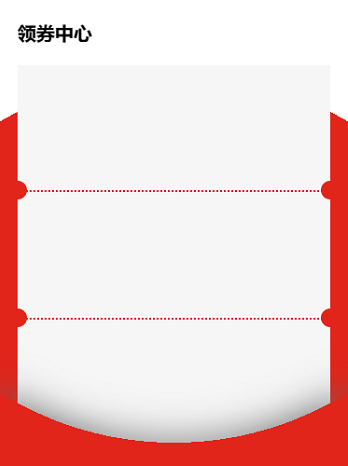
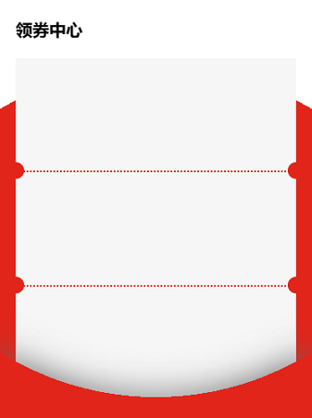

更多信息，请访问 Radial-gradient
. 径向渐变Radial Gradients - 由它们的中心和到容器边或角的大小决定
. 同线性渐变一样：创建一个径向渐变，至少定义两个色块；可以定义每个色块的渐变范围；可以指定大小；可以定义多重径向渐变等等
background-image: radial-gradient([shape] [size] at position, start-color, ..., last-color);

background-image: radial-gradient(#f40, #ff0);
background-image: radial-gradient(circle at left top, #f40, #ff0);
background-image: radial-gradient(circle at top left, #f40 50%, #ff0 0);
background-image: radial-gradient(circle at top left, #f40 50%, #ff0 0);
background-image: radial-gradient(at 0% 0%, transparent 71%, #f40 0);
. 可以使用background-image或background
background:
radial-gradient(circle at -10% 10%, transparent 70%, rgba(255, 68, 0, 0.3) 0),
radial-gradient(circle at 5% 20%, transparent 70%, rgba(255, 68, 0, 0.6) 0),
radial-gradient(circle at 10% 10%, transparent 75%, rgb(255, 68, 0) 0);
background:
radial-gradient(30px circle at 0 0, transparent 50%, #f40 0),
radial-gradient(30px circle at 100% 0, transparent 50%, #f40 0) right top,
radial-gradient(30px circle at 100% 100%, transparent 50%, #f40 0) right bottom,
radial-gradient(30px circle at 0% 100%, transparent 50%, #f40 0) left bottom;
background-repeat: no-repeat;
background-size: 50% 50%;


 
